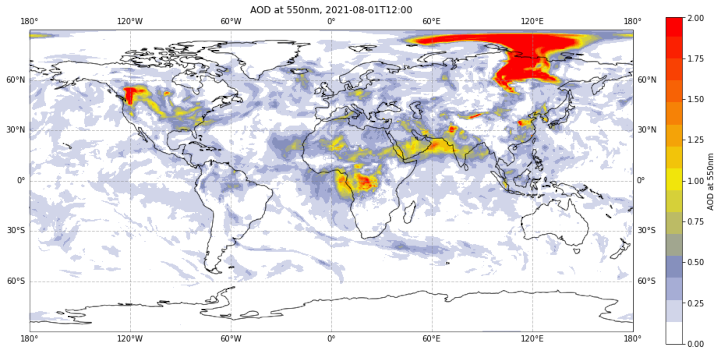

Copernicus Atmosphere Monitoring Service (CAMS) Data Tutorials
Contents

Copernicus Atmosphere Monitoring Service (CAMS) Data Tutorials¶
Discover how to access and handle atmospheric composition data!
This website contains Jupyter notebook based tutorials that demonstrate how to access, process and visualise the wide variety of data provided by the Atmosphere Data Store (CDS) of the Copernicus Atmosphere Monitoring Service (CAMS). Each tutorial includes code in Python and content in Markdown to provide clear, engaging and practical instructions on data handling which can be run in various cloud environments without any need for installation. You are invited to experiment with these tutorials and tailor them to your needs to extract results meaningful to you! The tutorials make use of data freely available on the ADS.
|
 |

How to run these tutorials¶
The tutorials are in the form of Jupyter notebooks. You will not need to install any software as there are a number of free cloud-based services to create, edit, run and export Jupyter notebooks such as these. At the top of each tutorial you will find links to a selection of such cloud-based services to run the tutorial. These may include the following:
Binder |
Kaggle |
Colab |
|---|---|---|
|
|
|
Binder may take some time to load, so please be patient! |
Requires (free) registration with Kaggle. Once in, “switch on the internet” via settings |
Requires Google account, and installation of some libraries, such as Cartopy |

If you would like to run this notebook in your own environment, we suggest you install Anaconda, which contains most of the libraries you will need. You will also need to install Xarray for working with multidimensional data in netcdf files, and the ADS API (pip install cdsapi) for downloading data programatically from the ADS.
Note
These tutorials provide practical guides on how to work with atmospheric composition data. They can be run without need for installation, and can be fully adapted to suit your needs!
Contents¶
Please browse through the tutorials listed below, or make use of the search function to look for specific topics or data processing workflows of interest.
Data Access Tutorials
Data Visualisation Tutorials
Data Processing Tutorials
Climate Data Processing